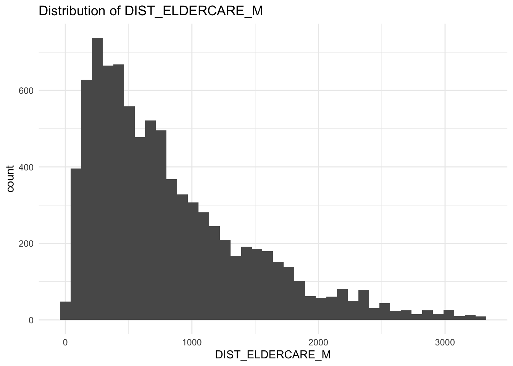
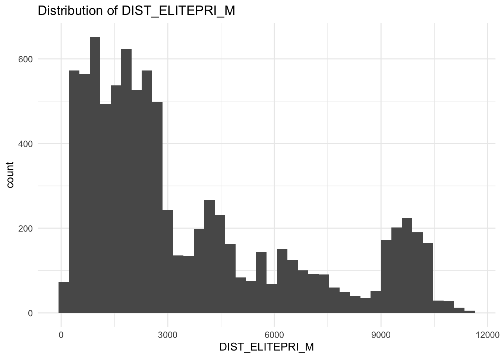
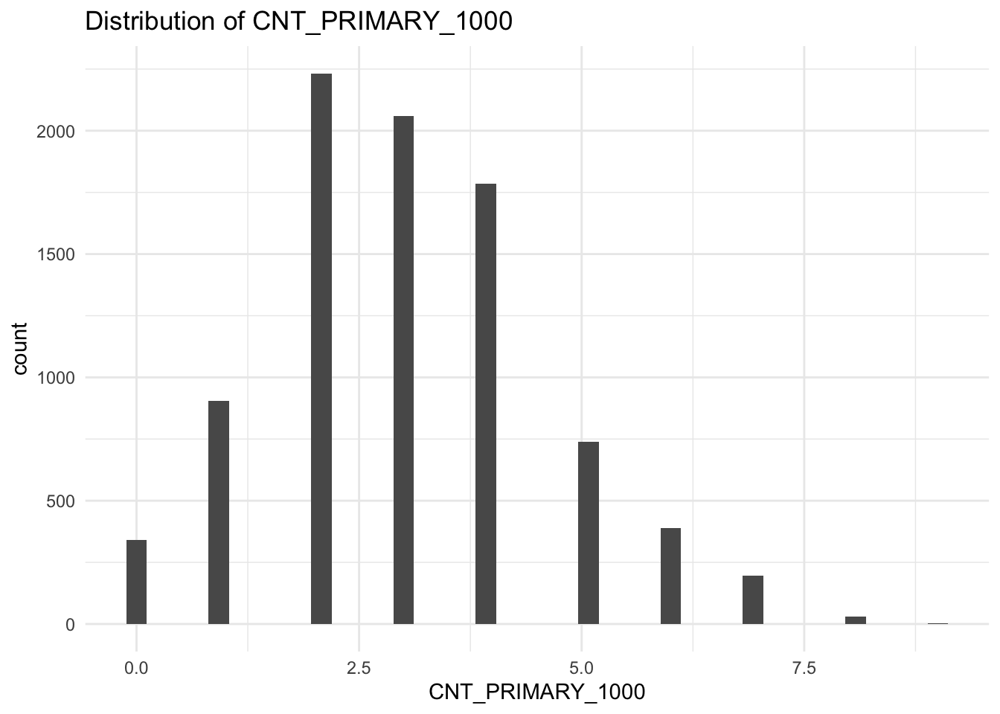
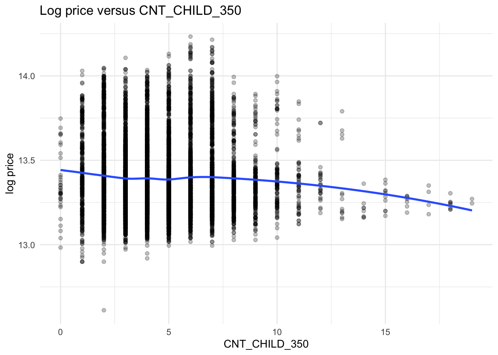

| Dataset | Purposes | Format | Source |
|---|---|---|---|
| HDB Resale Flat Prices 2017 Onward | Core transactions filtered to 4 room and study window | CSV | data.gov.sg |
| URA Master Plan 2019 Subzone Boundary No Sea | Map context and optional mainland mask | KML | data.gov.sg |
| MRT Stations | Transit proximity | GeoJSON | data.gov.sg |
| Parks | Green space proximity | GeoJSON | data.gov.sg |
| Eldercare Services | Eldercare proximity | GeoJSON | data.gov.sg |
| Hawker Centres | Food services proximity | GeoJSON | data.gov.sg |
| Supermarkets | Supermarket proximity | GeoJSON | data.gov.sg |
| Shopping Malls | Retail centre proximity | CSV | kaggle |
| General Information of School | Elite school proximity within 1 km | CSV | data.gov.sg |
| Childcare Centres | Childcare counts within 350 meters | GeoJSON | data.gov.sg |
| Kindergartens | Kindergarten counts within 350 meters | GeoJSON | data.gov.sg |
| Bus Stops | Bus stop counts within 350 meters | SHP | Land Transport DataMall |
| CBD Reference | Reference for CBD distance | Point or Polygon | TO SUPPLY |
| OneMap Geocoding Service | Address/Postcode to coordinate lookup | API JSON | OneMap |
Take-home Ex03

1 Introduction
This study examines the determinants of Housing and Development Board resale prices in Singapore using an explanatory spatial modelling framework. We focus on 4 room flats during 1 January 2025 to 30 September 2025 to maintain comparability and reflect current family preferences for this size category (Renovation Contractor Singapore 2025). The objective is to identify structural and locational attributes associated with transaction prices and to reveal how those associations vary across space. Structural variables include floor area in square metres, floor level, age in years, and remaining lease in years. Locational variables include proximity to rail transit, parks and open space, primary schools including selected high performing schools, childcare and preschool supply, supermarkets, shopping malls, and bus stops. Count variables are computed within 350 m and 1,000 m buffers, and point to point proximity is measured in metres after projecting all layers to SVY21. The remainder of this report states the research questions, documents reproducible data preparation, specifies the global and geographically weighted models, and presents spatially explicit findings with concise implications.
2 Research Questions
This section states operational questions that guide an explanatory analysis of HDB resale prices for 4 room flats from 1 January 2025 to 30 September 2025. The questions align variable construction, model calibration, and interpretation with the objective of identifying price drivers and their spatial variation using a global Multiple Linear Regression baseline and a local geographically weighted model.
RQ1: Which structural attributes of a flat such as floor area, floor level, age, and remaining lease are significantly associated with resale price during the study window
RQ2: Which locational attributes such as proximity to rail transit, parks, primary schools, childcare supply, supermarkets, shopping malls, and bus stops are significantly associated with resale price
RQ3: To what extent do these associations vary across space, as evidenced by spatially varying coefficients from a geographically weighted model
RQ4: Does the geographically weighted model materially improve fit and residual behaviour relative to a global Multiple Linear Regression specification
RQ5: Where are local effects notably stronger or weaker, and what practical implications follow for buyers, valuers, and planners
Together these questions structure the analytical framework and ensure direct alignment between the study objectives and subsequent methods.
3 The Data
In this section, we document every dataset used to construct a transparent, auditable, and fully reproducible sandbox for explanatory modelling of HDB resale prices. The unit of analysis is individual transactions for 4 room flats within 1 January 2025 to 30 September 2025. The core input is the official Resale Flat Prices table. All other layers are supporting geographic data used strictly to engineer the required structural and location variables. To make verification straightforward, sources are presented in a compact 4 column table that lists the dataset name, its modelling purpose, the file format, and a direct source link. All spatial layers are ingested as simple features and projected to SVY21 EPSG 3414 so distance and buffer computations are expressed in metres. Where an application programming interface is involved, we will cache responses to local files to allow repeated runs without network variance.
4 Setup the Environment
A consistent analytical environment ensures reproducibility and transparency in spatial data analysis. This section defines the R environment used in the study. All scripts were executed in RStudio using packages that support data wrangling, spatial statistics and visualisation. The pacman package is used to automate installation and loading of required libraries. Each library serves a specific purpose within the analytical workflow, and a random seed is set to guarantee consistent statistical outputs across repeated runs.
# ensure the package manager is available
if (!require(pacman)) install.packages("pacman") # install pacman once if missing
# load all required libraries in one call
pacman::p_load(
tidyverse, # data wrangling and plotting
sf, # spatial vector data handling
GWmodel, # geographically weighted modelling
sfdep, # spatial diagnostics used in the report
tmap, # cartographic maps (static and interactive)
ggplot2, # grammar of graphics for charts
httr, # HTTP requests for geocoding if used
jsonlite, # parsing JSON responses
progress, # simple progress bars for batch jobs
knitr, # report tables
kableExtra, # table styling for HTML output
purrr,
stringr
)
# set reproducibility and friendly numeric printing
set.seed(626) # fixed seed for repeatable results
options(stringsAsFactors = FALSE) # keep character columns as character
options(scipen = 999) # print numbers without scientific notation5 Geocoding for Geometric
This section turns two aspatial sources, HDB Resale Flat Prices 2017 Onward and General Information of School, into spatial features for analysis. For HDB transactions, we filter to 4-room flats between 1 Jan 2025 and 30 Sep 2025, standardise street names, geocode addresses with OneMap, cache results, and convert to sf points in WGS84 before transforming to SVY21 (EPSG 3414, Transverse Mercator) so distances are in metres. For schools, we keep only Primary level entries, normalise and de-duplicate 6-digit postcodes, query OneMap by postcode, then join X, Y coordinates and convert directly to SVY21 since OneMap returns SVY21 coordinates for postal lookups. The outputs are two clean spatial objects: HDBresale_sf and primary_schools_sf, ready for Section 6 where we will engineer proximity and count variables (for example, 350 meters buffers and 1,000 meters counts) and integrate the amenity layers.
5.1 Geocoding HDB resale transactions by addresses
We filter 4 room transactions in the study window, tidy street tokens for better matches, geocode each unique address with OneMap, cache results, join coordinates, build POINT geometry, reproject to EPSG 3414, validate, and save.
5.1.1 Load and filter to study window and flat type
# load resale table
HDBresale_raw <- readr::read_csv("/Users/cktan/Desktop/SMU/01_Geospatial Analytics (ISSS626)/Hands-on_Ex/Take-home_Ex03/data/aspatial/ResaleflatpricesbasedonregistrationdatefromJan2017onwards.csv") # read CSV
# filter to 4 room and window 2025 01 to 2025 09
HDBresale <- HDBresale_raw %>% # start pipeline
dplyr::filter(flat_type == "4 ROOM") %>% # keep 4 room
dplyr::filter(month >= "2025-01", month <= "2025-09") # keep study months5.1.2 Normalise street tokens
Light token fixes improve geocoding hit-rate.
# normalise street tokens for better match rate before calling OneMap
HDBresale$street_name <- gsub("ST\\.", "SAINT", HDBresale$street_name) # expand ST. to SAINT5.1.3 Define OneMap address geocoder with caching
Call OneMap once per unique address; cache results to CSV.
# function to call OneMap elastic search and return first LAT LON
geocode_addr <- function(block, streetname) { # define function
url <- "https://onemap.gov.sg/api/common/elastic/search" # endpoint
q <- list(searchVal = paste(block, streetname), # query text
returnGeom = "Y", getAddrDetails = "N", pageNum = "1") # parameters
txt <- httr::content(httr::GET(url, query = q), as = "text", encoding = "UTF-8") # request and read
js <- jsonlite::fromJSON(txt) # parse JSON
if (length(js$results) == 0) # case no result
return(tibble::tibble(LATITUDE = NA_real_, LONGITUDE = NA_real_)) # return NA coords
tibble::tibble(LATITUDE = as.numeric(js$results$LATITUDE[1]), # numeric lat
LONGITUDE = as.numeric(js$results$LONGITUDE[1])) # numeric lon
}
# build or reload cache of unique address to coordinates
# path to the cache file
cache_path <- "data/aspatial/geocode_hdb_cache.csv" # csv cache for address results
if (file.exists(cache_path)) { # use cache if it exists
hdb_cache <- readr::read_csv(cache_path, show_col_types = FALSE) # load cached coordinates
} else { # otherwise build the cache now
uniq_addr <- HDBresale %>% # start from filtered HDB table
dplyr::distinct(block, street_name) # keep unique block street pairs
pb <- progress::progress_bar$new(total = nrow(uniq_addr)) # progress indicator
hdb_cache <- uniq_addr %>% # begin cache pipeline
dplyr::mutate( # add a list column named geo
geo = purrr::map2( # call function for each pair
block, # first argument is block
street_name, # second argument is street name
function(.x, .y) { # inline function wrapper
pb$tick() # advance the progress bar
geocode_addr(.x, .y) # call OneMap geocoder and return tibble
}
)
) %>% # end mutate and continue pipe
tidyr::unnest(cols = c(geo)) # expand LATITUDE and LONGITUDE columns
readr::write_csv(hdb_cache, cache_path) # save cache to disk for reuse
}5.1.4 Enforce one record per address and join coordinates
Bind LATITUDE, LONGITUDE, convert to WGS84 points, then to SVY21 (TM).
# keep one coordinate per address and ensure numeric
hdb_cache_fixed <- hdb_cache %>%
dplyr::mutate(LATITUDE = as.numeric(LATITUDE), LONGITUDE = as.numeric(LONGITUDE)) %>% # numeric
dplyr::filter(!is.na(LATITUDE), !is.na(LONGITUDE)) %>% # drop NA rows
dplyr::group_by(block, street_name) %>% dplyr::slice_head(n = 1) %>% dplyr::ungroup() # one per pair
# attach coordinates to filtered HDB table
HDBresale_geo <- HDBresale %>% # base table
dplyr::left_join(hdb_cache_fixed, by = c("block","street_name")) # join LAT LON5.1.5 Create POINT geometry and validate
Verify the geometry output by using glimpse().
# build sf points in WGS 84 then transform to SVY21 EPSG 3414
HDBresale_sf <- HDBresale_geo %>%
sf::st_as_sf(coords = c("LONGITUDE","LATITUDE"), crs = 4326) %>% # create POINT
sf::st_transform(3414) # project to 3414
# validate type and reference system
st_crs(HDBresale_sf)Coordinate Reference System:
User input: EPSG:3414
wkt:
PROJCRS["SVY21 / Singapore TM",
BASEGEOGCRS["SVY21",
DATUM["SVY21",
ELLIPSOID["WGS 84",6378137,298.257223563,
LENGTHUNIT["metre",1]]],
PRIMEM["Greenwich",0,
ANGLEUNIT["degree",0.0174532925199433]],
ID["EPSG",4757]],
CONVERSION["Singapore Transverse Mercator",
METHOD["Transverse Mercator",
ID["EPSG",9807]],
PARAMETER["Latitude of natural origin",1.36666666666667,
ANGLEUNIT["degree",0.0174532925199433],
ID["EPSG",8801]],
PARAMETER["Longitude of natural origin",103.833333333333,
ANGLEUNIT["degree",0.0174532925199433],
ID["EPSG",8802]],
PARAMETER["Scale factor at natural origin",1,
SCALEUNIT["unity",1],
ID["EPSG",8805]],
PARAMETER["False easting",28001.642,
LENGTHUNIT["metre",1],
ID["EPSG",8806]],
PARAMETER["False northing",38744.572,
LENGTHUNIT["metre",1],
ID["EPSG",8807]]],
CS[Cartesian,2],
AXIS["northing (N)",north,
ORDER[1],
LENGTHUNIT["metre",1]],
AXIS["easting (E)",east,
ORDER[2],
LENGTHUNIT["metre",1]],
USAGE[
SCOPE["Cadastre, engineering survey, topographic mapping."],
AREA["Singapore - onshore and offshore."],
BBOX[1.13,103.59,1.47,104.07]],
ID["EPSG",3414]]5.2 Geocoding schools by postcodes
We filter to PRIMARY level, standardise 6 digit postcodes, query OneMap by postcode to obtain X and Y in SVY21, keep one result per code, join to the table, convert to POINT, validate EPSG 3414, and save.
5.2.1 Load and keep primary level
Read the table and filter mainlevel_code == "PRIMARY".
# read school table and keep primary level
schools <- readr::read_csv("/Users/cktan/Desktop/SMU/01_Geospatial Analytics (ISSS626)/Hands-on_Ex/Take-home_Ex03/data/aspatial/Generalinformationofschools.csv", show_col_types = FALSE)
primary_schools <- dplyr::filter(schools, mainlevel_code == "PRIMARY")
# standardise 6 digit postcodes
primary_schools <- primary_schools %>%
dplyr::mutate(postal_code = stringr::str_pad(postal_code, 6, pad = "0")) # pad5.2.2 OneMap postcode lookup and clean
# query OneMap by postcode to get X Y in SVY21
om_url <- "https://onemap.gov.sg/api/common/elastic/search" # endpoint
postcodes <- unique(primary_schools$postal_code) # unique codes
found_xy <- tibble::tibble() # holder
for (pc in postcodes) { # loop codes
q <- list(searchVal = pc, returnGeom = "Y", getAddrDetails = "Y", pageNum = "1") # params
js <- httr::content(httr::GET(om_url, query = q)) # request parse
if (!is.null(js$found) && js$found > 0) { # keep matches
df <- as.data.frame(js$results, stringsAsFactors = FALSE) # to data frame
found_xy <- dplyr::bind_rows(found_xy, tibble::as_tibble(df[, c("POSTAL","X","Y")])) # keep fields
}
}
# coerce and keep one row per code
found_xy_clean <- found_xy %>%
dplyr::mutate(POSTAL = as.character(POSTAL), X = as.numeric(X), Y = as.numeric(Y)) %>% # numeric
dplyr::filter(!is.na(X), !is.na(Y)) %>% # drop NA
dplyr::group_by(POSTAL) %>% dplyr::slice_head(n = 1) %>% dplyr::ungroup() # one per code5.2.3 Join coordinates and build POINT geometry
# attach X Y to school table
primary_schools_xy <- primary_schools %>%
dplyr::left_join(found_xy_clean, by = c("postal_code" = "POSTAL")) # join coords
# convert to sf POINT in SVY21
primary_schools_sf <- sf::st_as_sf(primary_schools_xy, coords = c("X","Y"), crs = 3414) # build POINT
# validate geometry and reference system
st_crs(primary_schools_sf)Coordinate Reference System:
User input: EPSG:3414
wkt:
PROJCRS["SVY21 / Singapore TM",
BASEGEOGCRS["SVY21",
DATUM["SVY21",
ELLIPSOID["WGS 84",6378137,298.257223563,
LENGTHUNIT["metre",1]]],
PRIMEM["Greenwich",0,
ANGLEUNIT["degree",0.0174532925199433]],
ID["EPSG",4757]],
CONVERSION["Singapore Transverse Mercator",
METHOD["Transverse Mercator",
ID["EPSG",9807]],
PARAMETER["Latitude of natural origin",1.36666666666667,
ANGLEUNIT["degree",0.0174532925199433],
ID["EPSG",8801]],
PARAMETER["Longitude of natural origin",103.833333333333,
ANGLEUNIT["degree",0.0174532925199433],
ID["EPSG",8802]],
PARAMETER["Scale factor at natural origin",1,
SCALEUNIT["unity",1],
ID["EPSG",8805]],
PARAMETER["False easting",28001.642,
LENGTHUNIT["metre",1],
ID["EPSG",8806]],
PARAMETER["False northing",38744.572,
LENGTHUNIT["metre",1],
ID["EPSG",8807]]],
CS[Cartesian,2],
AXIS["northing (N)",north,
ORDER[1],
LENGTHUNIT["metre",1]],
AXIS["easting (E)",east,
ORDER[2],
LENGTHUNIT["metre",1]],
USAGE[
SCOPE["Cadastre, engineering survey, topographic mapping."],
AREA["Singapore - onshore and offshore."],
BBOX[1.13,103.59,1.47,104.07]],
ID["EPSG",3414]]5.3 Persist clean spatial tables
We save both sf objects to RDS for reuse. This avoids repeated API calls and guarantees consistent inputs for the next section.
# save both objects for downstream steps
readr::write_rds(HDBresale_sf,
"/Users/cktan/Desktop/SMU/01_Geospatial Analytics (ISSS626)/Hands-on_Ex/Take-home_Ex03/data/rds/HDBresale_sf.rds") # geocoded HDB
readr::write_rds(primary_schools_sf,
"/Users/cktan/Desktop/SMU/01_Geospatial Analytics (ISSS626)/Hands-on_Ex/Take-home_Ex03/data/rds/primary_schools_sf.rds") # geocoded schools6 Predictors Preprocessing and Wrangling
This section prepares every predictor that will feed into the modelling phase. We start from our geocoded HDBresale_sf which already contains POINT geometry in EPSG 3414 SVY21 metres and covers the window from 2025-01 to 2025-09. The structural predictors transform raw strings into numeric features that a model can use directly. Remaining lease is parsed into number of months. Storey range is converted into a single floor level by averaging the lower and upper level. Age of unit is computed from lease commence year against the reference year 2025. For location predictors we strictly follow the kick starter pattern. All target layers are POINTS in EPSG 3414. If a source is polygon or multipolygon we create a safe interior point with st_point_on_surface and drop any Z or M dimensions. For proximity we compute two styles when relevant. First, a continuous distance in metres to the nearest feature. Second, a within buffer count where the requirement asks for numbers within 350 metres or 1 000 metres. Every step below is short, repeatable, and fully commented for beginners.
6.1 Structural predictors
6.1.1 Remaining lease in months
We need a numeric predictor for the time left on each lease so that models can read it directly. The source field Remaining lease is plain text such as “56 years 03 months” or sometimes simply “52 years”. The code below does four things. First, it makes sure our HDB table is available as an sf POINT layer in EPSG 3414, loading the saved RDS if needed or building POINTs from latitude and longitude if that is what we currently have. Second, it validates that geometry is POINT and the reference system is SVY21 metres. Third, it parses the text into two integers, years and months, with missing months treated as zero. Fourth, it computes the final integer REMAINING_LEASE_MTH and drops the temporary helpers. The result is a tidy numeric feature that is ready for joins and modelling, and we also get a quick compact check that confirms type and a small sample.
# ensure we have an sf POINT layer named HDBresale_sf in EPSG 3414
if (!exists("HDBresale_sf")) { # create if not present
if (file.exists("data/rds/HDBresale_sf.rds")) { # load saved object
HDBresale_sf <- readRDS("data/rds/HDBresale_sf.rds") # read rds
} else if (exists("HDBresale_geo")) { # else use geocoded table
HDBresale_sf <- HDBresale_geo # assign geocoded
} else { # nothing found
stop("HDBresale_sf was not found and no source is available") # stop with message
}
}
# convert to sf if needed using LATITUDE and LONGITUDE then project to 3414
if (!inherits(HDBresale_sf, "sf")) { # not an sf yet
stopifnot(all(c("LONGITUDE","LATITUDE") %in% names(HDBresale_sf))) # require coords
HDBresale_sf <- sf::st_as_sf( # build geometry
HDBresale_sf,
coords = c("LONGITUDE","LATITUDE"),
crs = 4326 # WGS 84 degrees
) %>%
sf::st_transform(3414) # convert to SVY21 metres
}
# validate geometry type and reference system
stopifnot(all(sf::st_geometry_type(HDBresale_sf) == "POINT")) # geometry must be POINT
stopifnot(sf::st_crs(HDBresale_sf)$epsg == 3414) # CRS must be 3414
# helper that converts one text like "56 years 03 months" to total months
parse_rl_to_months <- function(x) { # define helper
txt <- tolower(x) # normalise case
yr <- suppressWarnings(as.integer(str_extract(txt, "\\d+(?=\\s*year)"))) # pull years
mo <- suppressWarnings(as.integer(str_extract(txt, "\\d+(?=\\s*month)"))) # pull months
yr <- ifelse(is.na(yr), 0L, yr) # missing years to zero
mo <- ifelse(is.na(mo), 0L, mo) # missing months to zero
12L * yr + mo # return total months
}
# compute the numeric feature
HDBresale_sf <- HDBresale_sf %>% # start transform
mutate(
REMAINING_LEASE_MTH = parse_rl_to_months(remaining_lease) # new integer field
)
# compact checks and a quick peek
stopifnot(is.numeric(HDBresale_sf$REMAINING_LEASE_MTH)) # must be numeric
dplyr::glimpse( # show a compact view
dplyr::select(HDBresale_sf, remaining_lease, REMAINING_LEASE_MTH, geometry)
)Rows: 8,679
Columns: 3
$ remaining_lease <chr> "56 years 03 months", "86 years 09 months", "56 ye…
$ REMAINING_LEASE_MTH <int> 675, 1041, 674, 624, 1040, 624, 613, 614, 1039, 10…
$ geometry <POINT [m]> POINT (30036.29 38360.76), POINT (29283.45 3…head(dplyr::select(HDBresale_sf, remaining_lease, REMAINING_LEASE_MTH), 5) # first rowsSimple feature collection with 5 features and 2 fields
Geometry type: POINT
Dimension: XY
Bounding box: xmin: 28566.05 ymin: 38360.76 xmax: 30036.29 ymax: 38861.93
Projected CRS: SVY21 / Singapore TM
# A tibble: 5 × 3
remaining_lease REMAINING_LEASE_MTH geometry
<chr> <int> <POINT [m]>
1 56 years 03 months 675 (30036.29 38360.76)
2 86 years 09 months 1041 (29283.45 38517.37)
3 56 years 02 months 674 (30036.29 38360.76)
4 52 years 624 (28566.05 38861.93)
5 86 years 08 months 1040 (29283.45 38517.37)6.1.2 Floor level from storey range
We average the two numbers inside storey_range. Non numeric and missing cases are handled safely and leave NA.
# start from the existing sf table
stopifnot(inherits(HDBresale_sf, "sf")) # must be an sf object
stopifnot(sf::st_crs(HDBresale_sf)$epsg == 3414) # confirm EPSG 3414
# compute average floor level from ranges like "04 TO 06"
HDBresale_sf <- HDBresale_sf %>%
dplyr::mutate(
.rng = stringr::str_extract_all(storey_range, "\\d+"), # grab all numbers
.low = suppressWarnings(as.integer(purrr::map_chr(.rng, dplyr::first))), # first
.high = suppressWarnings(as.integer(purrr::map_chr(.rng, dplyr::last))), # last
FLOOR_LEVEL = as.numeric(.low + .high) / 2 # average
) %>%
dplyr::select(-.rng, -.low, -.high) # drop helpers
# quick checks
stopifnot(is.numeric(HDBresale_sf$FLOOR_LEVEL) | is.na(HDBresale_sf$FLOOR_LEVEL)) # numeric or NA
dplyr::glimpse(dplyr::select(HDBresale_sf, storey_range, FLOOR_LEVEL, geometry)) # previewRows: 8,679
Columns: 3
$ storey_range <chr> "13 TO 15", "10 TO 12", "10 TO 12", "07 TO 09", "28 TO 30…
$ FLOOR_LEVEL <dbl> 14, 11, 11, 8, 29, 5, 11, 5, 17, 17, 5, 8, 11, 5, 2, 11, …
$ geometry <POINT [m]> POINT (30036.29 38360.76), POINT (29283.45 38517.37…6.1.3 Age of the unit in years
e compute Age as 2025 minus lease_commence_date. Negative or missing values are set to NA.
# compute Age using the stated analysis year
analysis_year <- 2025 # set current analysis year
HDBresale_sf <- HDBresale_sf %>% # continue same table
dplyr::mutate(
AGE_2025 = suppressWarnings( # new numeric field
as.numeric(analysis_year - as.integer(lease_commence_date))
),
AGE_2025 = dplyr::if_else(AGE_2025 >= 0, AGE_2025, as.numeric(NA)) # guard
)
# validate
stopifnot(is.numeric(HDBresale_sf$AGE_2025) | is.na(HDBresale_sf$AGE_2025)) # numeric or NA
dplyr::glimpse(dplyr::select(HDBresale_sf, lease_commence_date, AGE_2025, geometry)) # previewRows: 8,679
Columns: 3
$ lease_commence_date <dbl> 1982, 2012, 1982, 1978, 2012, 1978, 1977, 1977, 20…
$ AGE_2025 <dbl> 43, 13, 43, 47, 13, 47, 48, 48, 13, 13, 49, 49, 47…
$ geometry <POINT [m]> POINT (30036.29 38360.76), POINT (29283.45 3…6.1.4 Structural predictors ready
At this point, our structural predictors are present on HDBresale_sf as REMAINING_LEASE_MTH, FLOOR_LEVEL, and AGE_2025.
# final compact view of structural fields
dplyr::glimpse(dplyr::select(HDBresale_sf,
REMAINING_LEASE_MTH, FLOOR_LEVEL, AGE_2025, geometry))Rows: 8,679
Columns: 4
$ REMAINING_LEASE_MTH <int> 675, 1041, 674, 624, 1040, 624, 613, 614, 1039, 10…
$ FLOOR_LEVEL <dbl> 14, 11, 11, 8, 29, 5, 11, 5, 17, 17, 5, 8, 11, 5, …
$ AGE_2025 <dbl> 43, 13, 43, 47, 13, 47, 48, 48, 13, 13, 49, 49, 47…
$ geometry <POINT [m]> POINT (30036.29 38360.76), POINT (29283.45 3…6.2 Preparing target layers for location factors
All location sources must be POINTS in EPSG 3414. We create a function that reads any vector file, sets CRS if missing, projects to 3414, converts polygons to safe interior points, and drops Z or M if present. We then prepare the exact layers as listed: MRT stations as GeoJSON, eldercare, hawker centres, parks, kindergartens, childcare centres, supermarkets, bus stops, primary schools, and shopping malls. Primary schools use the geocoded POINTS saved in Section 5. For elite schools we filter a named list. For counts we will reuse the prepared primary schools for the one kilometre radius. For CBD we read a user supplied vector file and convert to a single point using the interior point of the union. If a file is missing the code stops with a clear message so you can place the file before continuing.
6.2.1 Function and global checks
Before preparing any single layer, we define a function that reads a vector dataset, normalises its coordinate reference system, and guarantees a POINT result. This keeps every later subsection short and predictable. The function accepts common formats such as GeoJSON, Shapefile, KML, and GPKG through sf::st_read. If a source comes in with Z or M dimensions, those are dropped since our analysis is two dimensional in metres. If the input geometry is not a POINT, we safely convert to an interior point which always falls inside each feature. Finally we project to EPSG 3414 so distances are in metres. We also confirm our HDB layer is an sf POINT in EPSG 3414.
# Function to read any vector file and return POINTS in EPSG 3414
read_as_points_3414 <- function(path, assume_epsg = NULL) {
stopifnot(file.exists(path))
g <- sf::st_read(path, quiet = TRUE)
# if CRS is missing, set it without transforming
if (is.na(sf::st_crs(g)$epsg)) {
stopifnot(!is.null(assume_epsg)) # we must be told what it is
g <- sf::st_set_crs(g, assume_epsg) # <— use st_set_crs(), no warning
}
g <- sf::st_transform(g, 3414) # project to metres
g <- sf::st_zm(g, drop = TRUE, what = "ZM")# drop Z/M if present
if (!all(sf::st_geometry_type(g) == "POINT")) {
g <- sf::st_point_on_surface(g) |> # safe interior point
sf::st_as_sf(crs = 3414)
}
g
}
# Function for CSVs with lon and lat columns
read_csv_points_3414 = function(path, lon, lat, crs_in = 4326) {
stopifnot(file.exists(path)) # csv must exist
df = readr::read_csv(path, show_col_types = FALSE) # read csv
stopifnot(all(c(lon, lat) %in% names(df))) # require columns
g = sf::st_as_sf(df, coords = c(lon, lat), crs = crs_in) # build points
g = sf::st_transform(g, 3414) # project to metres
g # return points
}
# confirm HDB layer is ready
stopifnot(inherits(HDBresale_sf, "sf")) # must be sf
stopifnot(all(sf::st_geometry_type(HDBresale_sf) == "POINT")) # must be points
stopifnot(sf::st_crs(HDBresale_sf)$epsg == 3414) # must be 34146.2.2 MRT station exits from GeoJSON
Transit proximity is a key location factor. Our Table 1 in Section 3 states that the MRT station source is GeoJSON. We therefore load the MRT exits GeoJSON, discard any elevation or measure values, and ensure the coordinates are in EPSG 3414 so that all nearest distance calculations return values in metres. Some public datasets encode MRT exits as small polygons rather than true points. To avoid topological surprises, we convert any non point geometry to a safe interior point. The interior point always lies within a station footprint which makes nearest distance and within radius operations stable. A simple glimpse() confirms that the result contains only POINT geometry.
# read MRT exits GeoJSON and prepare POINTS in 3414
mrt_pt = read_as_points_3414("data/geospatial/LTAMRTStationExitGEOJSON.geojson") # read and convert
stopifnot(inherits(mrt_pt, "sf")) # must be sf
stopifnot(all(sf::st_geometry_type(mrt_pt) == "POINT")) # must be points
stopifnot(sf::st_crs(mrt_pt)$epsg == 3414) # metres
glimpse(mrt_pt)Rows: 597
Columns: 5
$ OBJECTID <int> 14641, 14642, 14643, 14644, 14645, 14646, 14647, 14648, 146…
$ EXIT_CODE <chr> "Exit A", "Exit A", "Exit A", "Exit A", "Exit A", "Exit A",…
$ INC_CRC <chr> "45CDB0D9BDC73079", "54BFE6EB924CBA6F", "A324402CF624723A",…
$ FMEL_UPD_D <chr> "20231019120510", "20231019120510", "20231019120510", "2023…
$ geometry <POINT [m]> POINT (20361.05 40974.54), POINT (20887.79 41082.76),…6.2.3 Primary schools and elite subset
Elite school proximity uses the same school geocodes you already created in Section 5. We load the prepared RDS primary_schools_sf.rds, confirm EPSG 3414 and POINT geometry, then build a filtered view containing only the twenty elite schools specified. This subset will be used to compute continuous distance to the nearest elite school point and also optional counts within buffers if needed. Keeping both the full set and the elite subset in memory gives flexibility for later features such as count of any primary school within one kilometre and distance to the nearest elite school. A quick print confirms the expected number of rows.
# load prepared primary schools points from your RDS
primary_schools_sf = readr::read_rds("data/rds/primary_schools_sf.rds") # load points
stopifnot(inherits(primary_schools_sf, "sf")) # must be sf
stopifnot(all(sf::st_geometry_type(primary_schools_sf) == "POINT")) # must be points
stopifnot(sf::st_crs(primary_schools_sf)$epsg == 3414) # metres
# filter to elite schools list
elite_names = c(
"NANYANG PRIMARY SCHOOL","TAO NAN SCHOOL","HONG WEN SCHOOL","NAN HUA PRIMARY SCHOOL",
"ST. HILDA'S PRIMARY SCHOOL","HENRY PARK PRIMARY SCHOOL","ANGLO-CHINESE SCHOOL (PRIMARY)",
"RAFFLES GIRLS' PRIMARY SCHOOL","PEI HWA PRESBYTERIAN PRIMARY SCHOOL","RADIN MAS PRIMARY SCHOOL",
"ROSYTH SCHOOL","KONG HWA SCHOOL","POI CHING SCHOOL","HOLY INNOCENTS' PRIMARY SCHOOL",
"AI TONG SCHOOL","RED SWASTIKA SCHOOL","MAHA BODHI SCHOOL","RULANG PRIMARY SCHOOL",
"PEI CHUN PUBLIC SCHOOL","SINGAPORE CHINESE GIRLS' PRIMARY SCHOOL"
)
elite_primary_sf = primary_schools_sf %>%
dplyr::filter(school_name %in% elite_names) # keep elite only
nrow(elite_primary_sf) # confirm row count[1] 206.2.4 Kindergartens GeoJSON
Counts of kindergartens within a local radius offer a proxy for family oriented amenities. The dataset in your project folder is a GeoJSON. We read it with the helper, which ensures every record becomes a POINT in EPSG 3414 with Z and M removed. We store the prepared layer as kindergartens_pt. This layer will be used to compute the number of locations inside a radius around each HDB resale point, for example within three hundred and fifty metres. The preparation step does not aggregate or filter because the raw count requires the complete set. A short check confirms geometry and projection are correct.
# read kindergartens as points
kindergartens_pt = read_as_points_3414("data/geospatial/Kindergartens.geojson") # prepare layer
stopifnot(all(sf::st_geometry_type(kindergartens_pt) == "POINT")) # confirm points6.2.5 Childcare centres GeoJSON
Childcare centres will be counted within a three hundred and fifty metre radius per HDB resale observation. The input format is GeoJSON according to your directory. We load the file with the helper so that geometry is POINT, projection is SVY21 metres, and extra dimensions are removed. We keep the data as is without filters, since the later count requires complete coverage. A simple glimpse() appears after the code so you can verify the feature count and the geometry column. This prepared layer is named childcare_pt and is used later to compute the required counts column.
# read childcare centres as points
childcare_pt = read_as_points_3414("data/geospatial/ChildCareServices.geojson") # prepare layer
stopifnot(all(sf::st_geometry_type(childcare_pt) == "POINT")) # confirm points6.2.6 Bus stops Shapefile
We will read the feature class BusStop.shp. Shapefiles often carry mixed attributes and sometimes include Z or M. The helper removes those and converts any non point geometry to a stable interior point. After projection to EPSG 3414, the prepared layer supports both nearest distance and counts within a three hundred and fifty metre radius. This is important because bus networks are dense and small geometric errors can change counts near buffer edges. The result is stored as busstop_pt.
busstop_pt <- read_as_points_3414(
"data/geospatial/BusStopLocation_Aug2025/BusStop.shp",
assume_epsg = 3414
)
stopifnot(inherits(busstop_pt, "sf"))
stopifnot(all(sf::st_geometry_type(busstop_pt) == "POINT"))
stopifnot(sf::st_crs(busstop_pt)$epsg == 3414)
dplyr::glimpse(dplyr::select(busstop_pt, geometry))Rows: 5,172
Columns: 1
$ geometry <POINT [m]> POINT (35565.66 41659.52), POINT (21439.91 31253.63), P…6.2.7 Eldercare GeoJSON
Eldercare proximity measures access to aged care services. The source file is GeoJSON. We treat it the same way as the previous categories. The prepared layer is eldercare_pt which holds POINT geometry in metres. Later sections will compute continuous nearest distance from each HDB resale observation to the nearest eldercare site. That feature will be named following the pattern you set earlier. The code below ensures that the geometry types are consistent which helps prevent confusing errors during distance calculations or spatial joins.
# read eldercare services as points
eldercare_pt = read_as_points_3414("data/geospatial/EldercareServices.geojson") # prepare layer
stopifnot(all(sf::st_geometry_type(eldercare_pt) == "POINT")) # confirm points6.2.8 Hawker centres GeoJSON
Food access through hawker centres is an essential amenity. The input is GeoJSON. We load and normalise with the helper and hold the result as POINTs in EPSG 3414. This prepared layer will support the continuous distance feature, usually named proximity to hawker. Because later analysis may also examine counts of food places within a given radius, we keep every record without filtering. The checks at the bottom confirm geometry and projection which keeps later computations safe and repeatable.
# read hawker centres as points
hawker_pt = read_as_points_3414("data/geospatial/HawkerCentresGEOJSON.geojson") # prepare layer
stopifnot(all(sf::st_geometry_type(hawker_pt) == "POINT")) # confirm points6.2.9 Parks GeoJSON
Green space proximity is derived from the parks layer. Some parks are polygons. The helper converts these to interior points so that nearest distance behaves as expected even for large irregular shapes. The layer is stored in metres which allows clean thresholds if you decide to add a within buffer count later. The code below reads the file, converts geometry if necessary, and performs simple validity checks. The prepared object is named parks_pt.
# read parks and convert to points
parks_pt = read_as_points_3414("data/geospatial/Parks.geojson") # prepare layer
stopifnot(all(sf::st_geometry_type(parks_pt) == "POINT")) # confirm points6.2.10 Shopping malls CSV
We read the CSV and build POINT geometry from those two columns. The default source reference for such files is usually WGS84, so we assign EPSG 4326 and then project to EPSG 3414. After preparation, nearest distance and within buffer counts are straightforward. The code names the resulting object mall_pt and runs the same geometry and projection checks as the other sections so everything remains consistent across features.
# read shopping mall coordinates from CSV and build points
mall_pt = read_csv_points_3414(
path = "data/geospatial/shopping_mall_coordinates.csv", # csv path
lon = "LONGITUDE", # name of longitude column
lat = "LATITUDE", # name of latitude column
crs_in = 4326 # source is WGS84
)
stopifnot(all(sf::st_geometry_type(mall_pt) == "POINT")) # confirm points
stopifnot(sf::st_crs(mall_pt)$epsg == 3414) # metres6.2.11 Supermarkets GeoJSON
Supermarket coverage is prepared exactly like hawker and eldercare. We use the helper to read the GeoJSON, transform to metres, and convert any footprint polygons to interior points. The resulting layer supermarket_pt supports both continuous distance and within buffer counts if needed. As with all other layers, we store the prepared set without additional filters so feature engineering in later sections can proceed without surprises. The code includes quick checks to ensure geometry and projection are correct.
# read supermarkets as points
supermarket_pt = read_as_points_3414("data/geospatial/SupermarketsGEOJSON.geojson") # prepare
stopifnot(all(sf::st_geometry_type(supermarket_pt) == "POINT")) # confirm points6.2.12 CBD point from Master Plan subzones
CBD proximity uses the DOWNTOWN CORE planning area from the master plan subzones you prepared earlier. We load mpsz_cl.rds, filter to DOWNTOWN CORE, dissolve to a single geometry, and convert the polygon to a safe interior point. This produces a single POINT named cbd_pt in EPSG 3414. Later sections compute the straight line distance from each HDB resale observation to this point and store that feature in metres. The conversion to an interior point avoids centroid outside issues for complex shapes, which keeps distances stable.
# load master plan subzones and create a CBD reference point
mpsz = readr::read_rds("data/rds/mpsz_cl.rds") # load polygons
stopifnot(sf::st_crs(mpsz)$epsg == 3414) # metres
cbd_poly = mpsz %>%
dplyr::filter(PLN_AREA_N == "DOWNTOWN CORE") %>% # select area
sf::st_union() # dissolve
cbd_pt = cbd_poly %>%
sf::st_point_on_surface() %>% # interior point
sf::st_as_sf(crs = 3414) # as sf with crs
stopifnot(all(sf::st_geometry_type(cbd_pt) == "POINT")) # confirm point6.2.13 Save prepared layers for repeatable use
To make later sections fast and deterministic, we save each prepared POINT layer as an RDS file under the data rds folder. This avoids re reading and re projecting each time the notebook runs. The saved objects are ready for joins, distance computation, and within buffer counts. The names follow a clear pattern so you can reload any single layer by name. If you update a source file in the future, simply rerun the corresponding subsection and the saved RDS will refresh.
# save every prepared layer to RDS for quick reuse
readr::write_rds(mrt_pt, "data/rds/mrt_pt.rds")
readr::write_rds(primary_schools_sf,"data/rds/primary_schools_pt.rds")
readr::write_rds(elite_primary_sf, "data/rds/elite_primary_pt.rds")
readr::write_rds(kindergartens_pt, "data/rds/kindergartens_pt.rds")
readr::write_rds(childcare_pt, "data/rds/childcare_pt.rds")
readr::write_rds(busstop_pt, "data/rds/busstop_pt.rds")
readr::write_rds(eldercare_pt, "data/rds/eldercare_pt.rds")
readr::write_rds(hawker_pt, "data/rds/hawker_pt.rds")
readr::write_rds(parks_pt, "data/rds/parks_pt.rds")
readr::write_rds(mall_pt, "data/rds/mall_pt.rds")
readr::write_rds(supermarket_pt, "data/rds/supermarket_pt.rds")
readr::write_rds(cbd_pt, "data/rds/cbd_pt.rds")6.3 Location predictors
We compute exactly the predictors requested. Distances are nearest neighbour distances in metres using st_nearest_feature and st_distance with by element equal TRUE. Counts use st_is_within_distance with the required radius. We keep names WITHIN_350M_KINDER, WITHIN_350M_CHILDCARE, WITHIN_350M_BUS, and WITHIN_1KM_PRIMARY for clarity. Diagnostics verify that the new fields are in the correct type and that the layer remains POINT in EPSG 3414. At the end we show a compact glimpse of the new columns and write an updated RDS so later sections can load the prepared table immediately.
6.3.1 Helpers used by all location predictors
To keep every later step short, reliable, and readable, we first define two tiny helpers. The first computes a nearest distance from every HDB point to the closest target point. It uses a nearest neighbor index so the work scales well even with several thousand features. The function guards that both layers are in the same projected system so the output is in metres. The second helper counts how many target points fall inside a circular buffer around each HDB point. It uses a fast predicate that returns logical relations, then converts those relations into simple integer counts. With these two helpers in place, every later subsection is a one or two line call that is easy to audit and reproduce.
# all layers must be POINT and EPSG 3414 before you call these
nearest_distance_m <- function(from_pt, to_pt) {
stopifnot(sf::st_crs(from_pt)$epsg == 3414, sf::st_crs(to_pt)$epsg == 3414)
idx <- sf::st_nearest_feature(from_pt, to_pt) # index of nearest target
d <- sf::st_distance(from_pt, to_pt[idx, ], by_element = TRUE)
as.numeric(d) # metres
}
count_within_m <- function(from_pt, to_pt, radius_m) {
stopifnot(sf::st_crs(from_pt)$epsg == 3414, sf::st_crs(to_pt)$epsg == 3414)
rel <- sf::st_is_within_distance(from_pt, to_pt, dist = radius_m)
vapply(rel, length, integer(1)) # integer counts
}
# convenience: load all prepared target layers once
mrt_pt <- readr::read_rds("data/rds/mrt_pt.rds")
parks_pt <- readr::read_rds("data/rds/parks_pt.rds")
eldercare_pt <- readr::read_rds("data/rds/eldercare_pt.rds")
hawker_pt <- readr::read_rds("data/rds/hawker_pt.rds")
supermarket_pt <- readr::read_rds("data/rds/supermarket_pt.rds")
mall_pt <- readr::read_rds("data/rds/mall_pt.rds")
kindergartens_pt<- readr::read_rds("data/rds/kindergartens_pt.rds")
childcare_pt <- readr::read_rds("data/rds/childcare_pt.rds")
busstop_pt <- readr::read_rds("data/rds/busstop_pt.rds")
primary_pt <- readr::read_rds("data/rds/primary_schools_pt.rds")
elite_primary_pt<- readr::read_rds("data/rds/elite_primary_pt.rds")
cbd_pt <- readr::read_rds("data/rds/cbd_pt.rds")6.3.2 Proximity to MRT stations
Access to rail transit is a well known driver of residential prices in compact cities. Distance to the nearest station approximates expected walk time, first mile effort, and overall transit convenience. We compute a single continuous feature in metres from each flat to its closest MRT exit. Using exits rather than line segments avoids ambiguity from long station footprints and guarantees a sensible origin for walking access. Values near zero mean the block is beside an exit, and larger values reflect locations that require a longer walk or an intermediate bus connection. This continuous metric works well in both global and local models and is straightforward to interpret.
HDBresale_sf <- HDBresale_sf %>%
dplyr::mutate(DIST_MRT_M = nearest_distance_m(geometry, mrt_pt))
# Quick check and inspection
glimpse(HDBresale_sf$DIST_MRT_M) num [1:8679] 718 731 718 384 731 ...6.3.3 Proximity to parks
Green space can influence prices by improving neighborhood comfort, providing recreation, and raising perceived environmental quality. We treat the park layer as a set of access points. For polygonal parks, you already converted to interior points in the preparation step to avoid edges and holes. We now compute a continuous metric in metres from each flat to the nearest park access point. The interpretation is similar to the transit feature. Smaller values indicate ready access to open space which can be especially valuable in dense estates. The feature is robust since it uses a direct nearest neighbor distance in a projected metre system.
HDBresale_sf <- HDBresale_sf %>%
dplyr::mutate(DIST_PARK_M = nearest_distance_m(geometry, parks_pt))
# Quick check and inspection
glimpse(HDBresale_sf$DIST_PARK_M) num [1:8679] 426 636 426 356 636 ...6.3.4 Proximity to eldercare services
Eldercare access matters to multi-generational households and can be reflected in housing choices. We measure straight line distance from each transaction to the closest registered eldercare service. While travel time would be ideal, Euclidean distance in a small city is a strong proxy once layers are in a metre based projection. The feature can capture both convenience and localized supply. In later diagnostics, you can examine whether this variable has stronger effects in towns with older blocks or where family structures produce higher demand for caregiving services.
HDBresale_sf <- HDBresale_sf %>%
dplyr::mutate(DIST_ELDERCARE_M = nearest_distance_m(geometry, eldercare_pt))
# Quick check and inspection
glimpse(HDBresale_sf$DIST_ELDERCARE_M) num [1:8679] 260 255 260 398 255 ...6.3.5 Proximity to hawker centres
Food access is a daily need. Hawker centres provide affordable options and are commonly used reference points for walkable amenities. We add a continuous distance in metres to the nearest hawker centre point. This variable complements the supermarket feature because the two cover different price tiers and operating hours. If you wish to explore threshold effects later, you can also build indicator variables for within a short walking distance. For now, the continuous measure keeps models simple and comparable across towns.
HDBresale_sf <- HDBresale_sf %>%
dplyr::mutate(DIST_HAWKER_M = nearest_distance_m(geometry, hawker_pt))
# Quick check and inspection
glimpse(HDBresale_sf$DIST_HAWKER_M) num [1:8679] 389 381 389 132 381 ...6.3.6 Proximity to supermarkets
Supermarkets indicate stable food supply and often co locate with other services such as pharmacies and financial services. We compute the distance to the nearest supermarket point. The variable captures everyday convenience that families value when selecting a flat. It can also proxy for local retail vitality. Be aware that this feature sometimes correlates with shopping mall distance in central areas, so you will check variance inflation later. For now we keep it as a straightforward continuous measure that is easy to explain to a non technical audience.
HDBresale_sf <- HDBresale_sf %>%
dplyr::mutate(DIST_SUPERMKT_M = nearest_distance_m(geometry, supermarket_pt))
# Quick check and inspection
glimpse(HDBresale_sf$DIST_SUPERMKT_M) num [1:8679] 285 314 285 186 314 ...6.3.7 Proximity to shopping malls
Regional and town centre malls bundle retail, dining, and services in one place. Proximity can raise perceived convenience and social activity. Your mall layer comes from a table with latitude and longitude that was converted to points and projected to metres earlier. We now compute a single nearest distance feature. Remember that this is a straight line proxy. If you later have access to a street network, the same helper can be swapped for a travel time routine without changing the structure of the model script.
HDBresale_sf <- HDBresale_sf %>%
dplyr::mutate(DIST_MALL_M = nearest_distance_m(geometry, mall_pt))
# Quick check and inspection
glimpse(HDBresale_sf$DIST_MALL_M) num [1:8679] 756 652 756 960 652 ...6.3.8 Proximity to the CBD reference point
The central business district concentrates high wage employment and premium services. Distance to that center is often a strong global gradient in price models. You created a stable CBD reference by dissolving the Downtown Core planning area and converting it to a safe interior point. We now measure a continuous distance from every flat to this single reference. The value helps the model separate broad city wide trends from local amenity effects. In later maps of local coefficients you can observe where the CBD gradient weakens or strengthens relative to neighborhood factors.
HDBresale_sf <- HDBresale_sf %>%
dplyr::mutate(DIST_CBD_M = nearest_distance_m(geometry, cbd_pt))
# Quick check and inspection
glimpse(HDBresale_sf$DIST_CBD_M) num [1:8679] 8486 8718 8486 9185 8718 ...6.3.9 Proximity to elite primary schools
School prestige can affect price expectations for families with young children. You already derived an elite subset with twenty schools from the full primary list. We compute a continuous distance to the nearest elite school point. This gives a clear and interpretable number in metres that can be compared across towns. In later robustness checks you may also include the distance to the nearest ordinary primary school to differentiate general access from prestige access. For now we focus on the prestige signal since that is more likely to be reflected in marginal willingness to pay.
HDBresale_sf <- HDBresale_sf %>%
dplyr::mutate(DIST_ELITEPRI_M = nearest_distance_m(geometry, elite_primary_pt))
# Quick check and inspection
glimpse(HDBresale_sf$DIST_ELITEPRI_M) num [1:8679] 2090 1390 2090 992 1390 ...6.3.10 Amenity counts within three hundred and fifty metres
Counts within a short walking radius capture micro scale density of child related and transport services. We build three integers. The first is the number of kindergartens within three hundred and fifty metres. The second is the number of childcare centres within the same radius. The third is the number of bus stops within three hundred and fifty metres which acts as a proxy for feeder service availability. These are simple and robust indicators that often improve model fit by capturing local intensity rather than only the nearest distance. Because all layers are already in EPSG 3414 metres, the buffer threshold is exact and reproducible.
RADIUS_SHORT <- 350
HDBresale_sf <- HDBresale_sf %>%
dplyr::mutate(
CNT_KINDER_350 = count_within_m(geometry, kindergartens_pt, RADIUS_SHORT),
CNT_CHILD_350 = count_within_m(geometry, childcare_pt, RADIUS_SHORT),
CNT_BUS_350 = count_within_m(geometry, busstop_pt, RADIUS_SHORT)
)
# Quick check and inspection
glimpse(HDBresale_sf$CNT_KINDER_350) int [1:8679] 1 1 1 2 1 2 1 1 0 0 ...glimpse(HDBresale_sf$CNT_CHILD_350) int [1:8679] 3 5 3 5 5 5 5 7 2 2 ...glimpse(HDBresale_sf$CNT_BUS_350) int [1:8679] 7 4 7 7 4 7 6 7 5 5 ...6.3.11 Primary schools within one kilometre
General access to basic education is best represented by the number of primary schools within a larger but still local catchment. We therefore compute an integer count of primary schools within one thousand metres of each flat. This measure captures broader choice sets and helps control for areas where many schools cluster. It complements the elite distance feature by distinguishing overall supply from prestige proximity. The value is easy to interpret in policy terms since it reads as the number of nearby schools reachable by a short ride or longer walk.
HDBresale_sf <- HDBresale_sf %>%
dplyr::mutate(CNT_PRIMARY_1000 = count_within_m(geometry, primary_pt, 1000))
# Quick check and inspection
glimpse(HDBresale_sf$CNT_PRIMARY_1000) int [1:8679] 3 2 3 2 2 2 3 3 2 2 ...6.3.12 Quick compact check
As a final sanity step for this section, we print a compact view of the new fields. This confirms types, units, and a few example values.
dplyr::glimpse(
dplyr::select(
HDBresale_sf,
DIST_MRT_M, DIST_PARK_M, DIST_ELDERCARE_M, DIST_HAWKER_M,
DIST_SUPERMKT_M, DIST_MALL_M, DIST_CBD_M, DIST_ELITEPRI_M,
CNT_KINDER_350, CNT_CHILD_350, CNT_BUS_350, CNT_PRIMARY_1000, geometry
)
)Rows: 8,679
Columns: 13
$ DIST_MRT_M <dbl> 717.8940, 731.4224, 717.8940, 383.6496, 731.4224, 383…
$ DIST_PARK_M <dbl> 425.5483, 635.8962, 425.5483, 356.4783, 635.8962, 356…
$ DIST_ELDERCARE_M <dbl> 259.7684, 254.9544, 259.7684, 397.6108, 254.9544, 397…
$ DIST_HAWKER_M <dbl> 388.7647, 381.4729, 388.7647, 132.0052, 381.4729, 132…
$ DIST_SUPERMKT_M <dbl> 284.9091, 314.4801, 284.9091, 186.2702, 314.4801, 186…
$ DIST_MALL_M <dbl> 756.2998, 652.1127, 756.2998, 959.9891, 652.1127, 959…
$ DIST_CBD_M <dbl> 8485.514, 8717.684, 8485.514, 9185.376, 8717.684, 918…
$ DIST_ELITEPRI_M <dbl> 2089.5384, 1389.9549, 2089.5384, 991.5717, 1389.9549,…
$ CNT_KINDER_350 <int> 1, 1, 1, 2, 1, 2, 1, 1, 0, 0, 0, 0, 2, 1, 1, 1, 2, 1,…
$ CNT_CHILD_350 <int> 3, 5, 3, 5, 5, 5, 5, 7, 2, 2, 2, 2, 4, 6, 5, 5, 5, 3,…
$ CNT_BUS_350 <int> 7, 4, 7, 7, 4, 7, 6, 7, 5, 5, 5, 5, 6, 4, 4, 4, 7, 6,…
$ CNT_PRIMARY_1000 <int> 3, 2, 3, 2, 2, 2, 3, 3, 2, 2, 2, 1, 2, 2, 2, 2, 2, 3,…
$ geometry <POINT [m]> POINT (30036.29 38360.76), POINT (29283.45 3851…7 Exploratory Data Analysis (EDA)
7.1 Build an analysis table
# ensure packages are loaded
library(dplyr) # data wrangling
library(sf) # spatial data
library(ggplot2) # plotting
library(sfdep) # spatial weights and autocorrelation
# keep only four room transactions and select fields used in Section 6
analysis_sf <- HDBresale_sf %>% # start from the prepared layer
filter(flat_type == "4 ROOM") %>% # enforce study scope
mutate(LOG_PRICE = log(resale_price)) %>% # add log price for normality
select( # keep only fields we will explore
LOG_PRICE,
resale_price,
FLOOR_LEVEL,
REMAINING_LEASE_MTH,
AGE_2025,
DIST_CBD_M,
DIST_MRT_M,
DIST_PARK_M,
DIST_ELDERCARE_M,
DIST_HAWKER_M,
DIST_SUPERMKT_M,
DIST_MALL_M,
DIST_ELITEPRI_M,
CNT_KINDER_350,
CNT_CHILD_350,
CNT_BUS_350,
CNT_PRIMARY_1000,
geometry
) %>%
st_as_sf() # keep sf class explicitly
# quick integrity checks
stopifnot(inherits(analysis_sf, "sf")) # must be simple features
stopifnot(st_crs(analysis_sf)$epsg == 3414) # must be in metres
# a handy vector of numeric predictor names for loops
num_vars <- c(
"FLOOR_LEVEL","REMAINING_LEASE_MTH","AGE_2025",
"DIST_CBD_M","DIST_MRT_M","DIST_PARK_M","DIST_ELDERCARE_M",
"DIST_HAWKER_M","DIST_SUPERMKT_M","DIST_MALL_M","DIST_ELITEPRI_M",
"CNT_KINDER_350","CNT_CHILD_350","CNT_BUS_350","CNT_PRIMARY_1000"
)7.2 Univariate summaries and distributions
# print compact summaries for price and predictors
summary(select(st_drop_geometry(analysis_sf), LOG_PRICE, all_of(num_vars))) # plain stats for a quick scan LOG_PRICE FLOOR_LEVEL REMAINING_LEASE_MTH AGE_2025
Min. :12.61 Min. : 2.00 Min. : 485.0 Min. : 4.00
1st Qu.:13.24 1st Qu.: 5.00 1st Qu.: 750.0 1st Qu.: 9.00
Median :13.35 Median : 8.00 Median : 910.0 Median :23.00
Mean :13.39 Mean : 9.29 Mean : 916.1 Mean :22.85
3rd Qu.:13.50 3rd Qu.:11.00 3rd Qu.:1080.0 3rd Qu.:37.00
Max. :14.23 Max. :50.00 Max. :1144.0 Max. :58.00
DIST_CBD_M DIST_MRT_M DIST_PARK_M DIST_ELDERCARE_M
Min. : 1023 Min. : 21.79 Min. : 63.81 Min. : 0.0
1st Qu.: 9881 1st Qu.: 286.93 1st Qu.: 458.13 1st Qu.: 339.8
Median :13202 Median : 519.71 Median : 684.68 Median : 663.4
Mean :12516 Mean : 586.66 Mean : 758.61 Mean : 824.8
3rd Qu.:15768 3rd Qu.: 793.65 3rd Qu.: 974.97 3rd Qu.:1145.1
Max. :19874 Max. :2120.10 Max. :2205.03 Max. :3282.3
DIST_HAWKER_M DIST_SUPERMKT_M DIST_MALL_M DIST_ELITEPRI_M
Min. : 25.35 Min. : 0.0003 Min. : 39.14 Min. : 74.37
1st Qu.: 376.85 1st Qu.: 179.1599 1st Qu.: 378.70 1st Qu.: 1312.01
Median : 647.65 Median : 278.4398 Median : 600.73 Median : 2412.29
Mean : 730.12 Mean : 308.4312 Mean : 664.70 Mean : 3551.86
3rd Qu.: 961.37 3rd Qu.: 397.2718 3rd Qu.: 886.89 3rd Qu.: 4997.38
Max. :2500.14 Max. :1415.3217 Max. :2446.77 Max. :11490.86
CNT_KINDER_350 CNT_CHILD_350 CNT_BUS_350 CNT_PRIMARY_1000
Min. :0.0000 Min. : 0.000 Min. : 0.000 Min. :0.000
1st Qu.:0.0000 1st Qu.: 3.000 1st Qu.: 6.000 1st Qu.:2.000
Median :1.0000 Median : 4.000 Median : 8.000 Median :3.000
Mean :0.9289 Mean : 4.653 Mean : 7.985 Mean :3.036
3rd Qu.:1.0000 3rd Qu.: 6.000 3rd Qu.:10.000 3rd Qu.:4.000
Max. :8.0000 Max. :19.000 Max. :19.000 Max. :9.000 # draw a histogram for log price
ggplot(analysis_sf, aes(LOG_PRICE)) + # map column to x
geom_histogram(bins = 40) + # use many bins for detail
labs(title = "Distribution of log price", # plot title
x = "log price", y = "count") + # axis labels
theme_minimal() # simple theme
# loop and draw histograms for each numeric predictor
for(v in num_vars){ # iterate over names
p <- ggplot(analysis_sf, aes(.data[[v]])) + # aesthetic by name lookup
geom_histogram(bins = 40) + # histogram
labs(title = paste("Distribution of", v), # title per variable
x = v, y = "count") + # labels
theme_minimal() # consistent theme
print(p) # show the plot
}









7.3 Simple bivariate relationships
# correlation matrix for a quick numerical overview
cor_df <- select(st_drop_geometry(analysis_sf), LOG_PRICE, all_of(num_vars)) # drop geometry for math
cor_mat <- cor(cor_df, use = "pairwise.complete.obs") # pairwise correlations
print(round(cor_mat, 2)) # rounded for readability LOG_PRICE FLOOR_LEVEL REMAINING_LEASE_MTH AGE_2025
LOG_PRICE 1.00 0.52 0.52 -0.52
FLOOR_LEVEL 0.52 1.00 0.30 -0.30
REMAINING_LEASE_MTH 0.52 0.30 1.00 -1.00
AGE_2025 -0.52 -0.30 -1.00 1.00
DIST_CBD_M -0.60 -0.25 0.09 -0.09
DIST_MRT_M -0.23 -0.11 0.03 -0.03
DIST_PARK_M -0.17 -0.05 0.11 -0.11
DIST_ELDERCARE_M -0.27 -0.13 0.03 -0.03
DIST_HAWKER_M -0.26 -0.14 0.03 -0.03
DIST_SUPERMKT_M 0.00 -0.04 0.05 -0.04
DIST_MALL_M 0.01 -0.01 -0.08 0.09
DIST_ELITEPRI_M -0.37 -0.13 0.12 -0.12
CNT_KINDER_350 -0.03 0.00 -0.16 0.16
CNT_CHILD_350 -0.04 0.02 0.02 -0.02
CNT_BUS_350 -0.08 -0.03 0.01 -0.01
CNT_PRIMARY_1000 -0.22 -0.10 -0.03 0.03
DIST_CBD_M DIST_MRT_M DIST_PARK_M DIST_ELDERCARE_M
LOG_PRICE -0.60 -0.23 -0.17 -0.27
FLOOR_LEVEL -0.25 -0.11 -0.05 -0.13
REMAINING_LEASE_MTH 0.09 0.03 0.11 0.03
AGE_2025 -0.09 -0.03 -0.11 -0.03
DIST_CBD_M 1.00 0.17 0.34 0.40
DIST_MRT_M 0.17 1.00 0.09 0.11
DIST_PARK_M 0.34 0.09 1.00 -0.03
DIST_ELDERCARE_M 0.40 0.11 -0.03 1.00
DIST_HAWKER_M 0.34 0.01 0.12 0.13
DIST_SUPERMKT_M 0.02 0.18 -0.12 0.03
DIST_MALL_M -0.23 0.34 -0.04 0.03
DIST_ELITEPRI_M 0.71 0.00 0.23 0.36
CNT_KINDER_350 0.00 -0.06 0.03 0.03
CNT_CHILD_350 0.11 -0.18 0.17 -0.02
CNT_BUS_350 0.18 0.00 0.13 0.02
CNT_PRIMARY_1000 0.26 -0.28 0.23 -0.08
DIST_HAWKER_M DIST_SUPERMKT_M DIST_MALL_M DIST_ELITEPRI_M
LOG_PRICE -0.26 0.00 0.01 -0.37
FLOOR_LEVEL -0.14 -0.04 -0.01 -0.13
REMAINING_LEASE_MTH 0.03 0.05 -0.08 0.12
AGE_2025 -0.03 -0.04 0.09 -0.12
DIST_CBD_M 0.34 0.02 -0.23 0.71
DIST_MRT_M 0.01 0.18 0.34 0.00
DIST_PARK_M 0.12 -0.12 -0.04 0.23
DIST_ELDERCARE_M 0.13 0.03 0.03 0.36
DIST_HAWKER_M 1.00 -0.03 -0.16 0.23
DIST_SUPERMKT_M -0.03 1.00 0.21 -0.07
DIST_MALL_M -0.16 0.21 1.00 -0.27
DIST_ELITEPRI_M 0.23 -0.07 -0.27 1.00
CNT_KINDER_350 0.06 -0.12 -0.05 -0.05
CNT_CHILD_350 0.10 -0.24 -0.26 0.07
CNT_BUS_350 -0.02 -0.09 -0.24 0.06
CNT_PRIMARY_1000 0.07 -0.18 -0.35 0.13
CNT_KINDER_350 CNT_CHILD_350 CNT_BUS_350 CNT_PRIMARY_1000
LOG_PRICE -0.03 -0.04 -0.08 -0.22
FLOOR_LEVEL 0.00 0.02 -0.03 -0.10
REMAINING_LEASE_MTH -0.16 0.02 0.01 -0.03
AGE_2025 0.16 -0.02 -0.01 0.03
DIST_CBD_M 0.00 0.11 0.18 0.26
DIST_MRT_M -0.06 -0.18 0.00 -0.28
DIST_PARK_M 0.03 0.17 0.13 0.23
DIST_ELDERCARE_M 0.03 -0.02 0.02 -0.08
DIST_HAWKER_M 0.06 0.10 -0.02 0.07
DIST_SUPERMKT_M -0.12 -0.24 -0.09 -0.18
DIST_MALL_M -0.05 -0.26 -0.24 -0.35
DIST_ELITEPRI_M -0.05 0.07 0.06 0.13
CNT_KINDER_350 1.00 0.47 0.07 0.03
CNT_CHILD_350 0.47 1.00 0.24 0.32
CNT_BUS_350 0.07 0.24 1.00 0.21
CNT_PRIMARY_1000 0.03 0.32 0.21 1.00# scatter with smooth line for each predictor against log price
for(v in num_vars){ # iterate over predictors
p <- ggplot(analysis_sf, aes(x = .data[[v]], y = LOG_PRICE)) + # map x and y
geom_point(alpha = 0.25) + # many points require transparency
geom_smooth(method = "loess", se = FALSE) + # non parametric trend
labs(title = paste("Log price versus", v), # title per plot
x = v, y = "log price") + # axis labels
theme_minimal() # theme
print(p) # show
}





7.4 First spatial views
# build five quantile groups for log price
analysis_sf$PRICE_Q5 <- cut(analysis_sf$LOG_PRICE, breaks = quantile(analysis_sf$LOG_PRICE, probs = seq(0,1,0.2), na.rm = TRUE), include.lowest = TRUE) # factor of quantiles
# map price quantiles
ggplot(analysis_sf) + # start a map
geom_sf(aes(color = PRICE_Q5), size = 0.6) + # color points by quantile group
coord_sf() + # keep the native projection
labs(title = "Log price in five quantiles") + # title
theme_minimal() # theme
# build five quantile groups for distance to CBD
analysis_sf$CBD_Q5 <- cut(analysis_sf$DIST_CBD_M, breaks = quantile(analysis_sf$DIST_CBD_M, probs = seq(0,1,0.2), na.rm = TRUE), include.lowest = TRUE) # factor of quantiles
# map CBD distance quantiles
ggplot(analysis_sf) + # start a map
geom_sf(aes(color = CBD_Q5), size = 0.6) + # color by CBD groups
coord_sf() + # coordinates
labs(title = "Distance to CBD in five quantiles") + # title
theme_minimal() # theme
7.5 Distance decay checks for key access variables
# price versus CBD distance
ggplot(analysis_sf, aes(DIST_CBD_M, LOG_PRICE)) + # map variables
geom_point(alpha = 0.2) + # many points require transparency
geom_smooth(method = "loess", se = FALSE) + # non parametric fit
geom_rug(alpha = 0.2) + # add density cues
labs(title = "Log price versus distance to CBD",
x = "distance to CBD in metres", y = "log price") +
theme_minimal()
# price versus MRT distance
ggplot(analysis_sf, aes(DIST_MRT_M, LOG_PRICE)) + # map variables
geom_point(alpha = 0.2) + # scatter
geom_smooth(method = "loess", se = FALSE) + # smooth trend
geom_rug(alpha = 0.2) + # density
labs(title = "Log price versus distance to nearest MRT exit",
x = "distance to MRT in metres", y = "log price") +
theme_minimal()